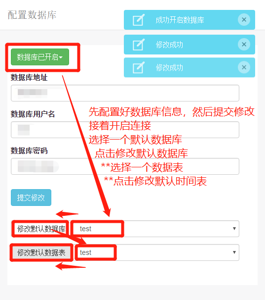
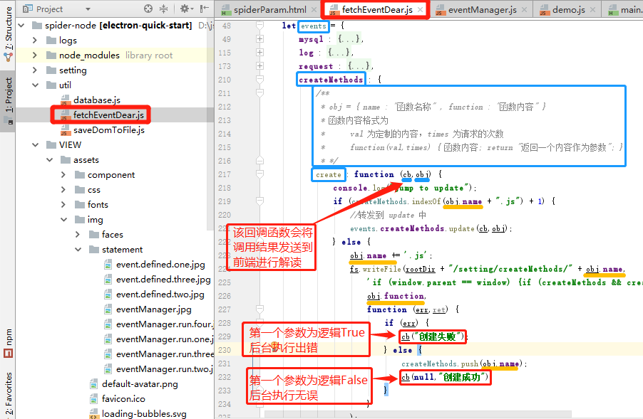
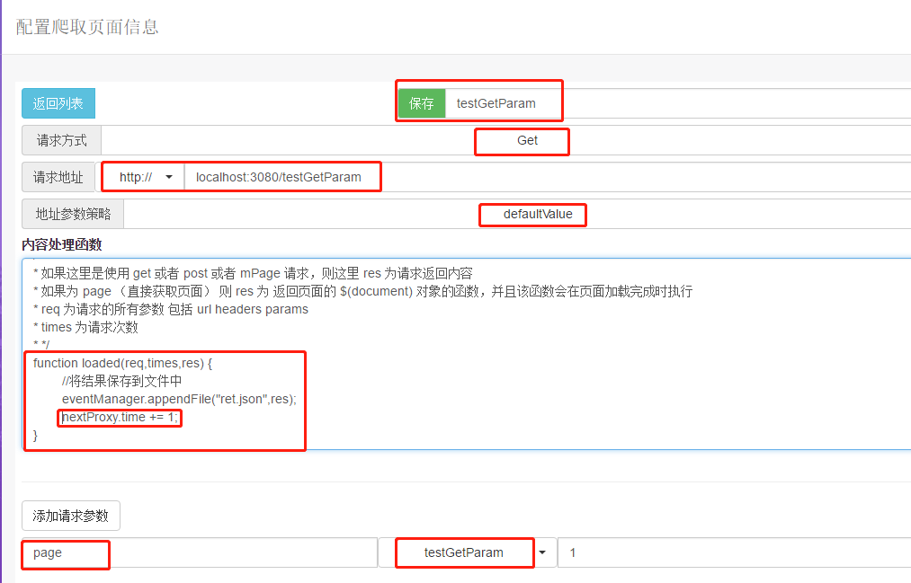

说明
这里使用的数据库是 Mysql 数据库
如果爬取时需要使用数据库存储应当首先进行配置， 并且必须配置默认数据库
建议使用 query 接口进行数据库操作

这里的日志分为 五类，分别为未分类 错误 通过 系统 运行过程
各种日志之间是存储在不同文件中的，同时提供了一个解析本地日志的功能，在爬取过程中将可以导出所有 运行过程 日志
除了 运行过程 日志外的日志无法导出，但可以在程序文件夹中复制到。
考虑到爬虫过程的请求信息可能是动态的，这里提供生成策略
策略可以使用在 URL 生成 请求参数 头部参数
对于使用 Get Post 请求的内容，头部请求才会有效
这里配置爬取一个页面所需的所有信息，包括 Url、头部参数、请求参数、爬取后处理方法
为了方便编写调试爬取后处理函数，这里提供了一个全局接口 debuggingRes

这里配置的是爬取方式为 通过模拟浏览器获取页面 时，在模拟浏览器将页面进行加载过程中对页面进行脚本注入，获取页面的部分信息。
这里的一个缺陷是，无法进行登陆信息的缓存，预设置。
该脚本的主要工作是获取页面的部分信息保存为本地文件后，重新读取后进行处理，弥补 Get Post 请求无法获取加载脚本的 dom 页面，和弥补 直接获取页面 遭受跨域失败的尴尬的中间方案
这里可以开始进行爬取页面，同时需要先配置一个 工作路径 用于存放爬取过程中产生的临时文件
eventManager.events.* 包含了所有的已经进行过包装的接口，使用方法也是固定的
eventManager.run(eventManager.events.*1.*2,function(ret){},param,"logType");
*1 可以是 mysql、log、request、createMethods、requestManager、file
*2 是每个类别下的小项
其中回调函数的 ret[0] 为错误对象，当该对象为逻辑 false 时，表示没有发生错误
logType 的取值可以是 error pass split join
后台方法的定义

前端对后台方法的统一配置
前端调用
这里有一个规范，后台返回的参数，第一个参数默认为错误对象，如果对象为逻辑True表示后台执行发生错误。
服务器(Node Express4)
参数生成策略
爬取配置

爬取
结果
爬取页面预处理
爬取配置
爬取